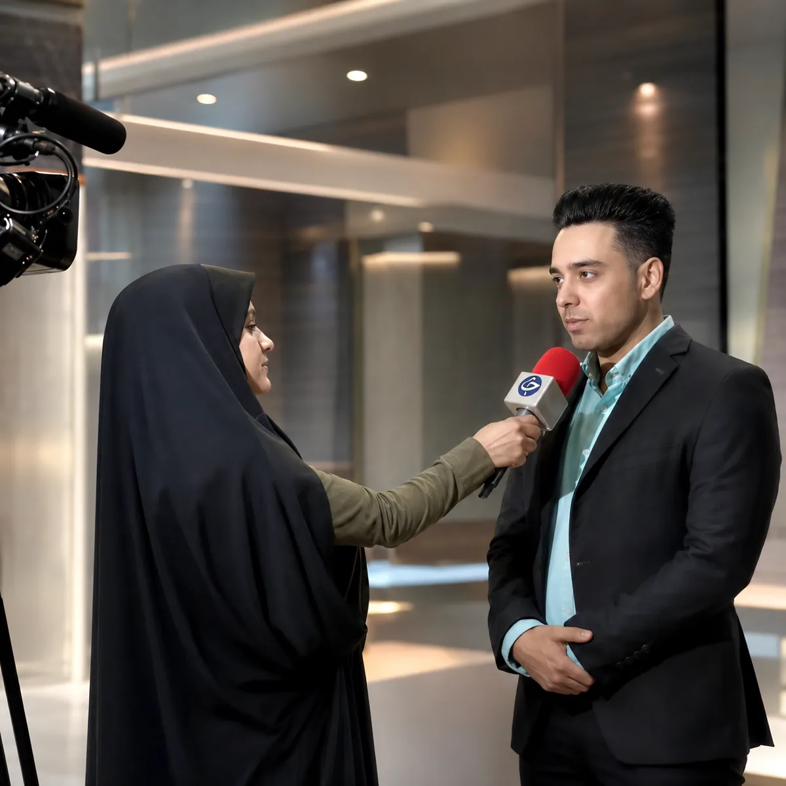
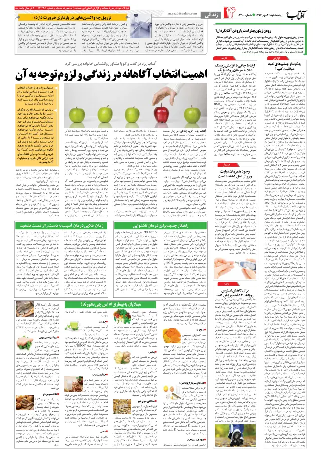
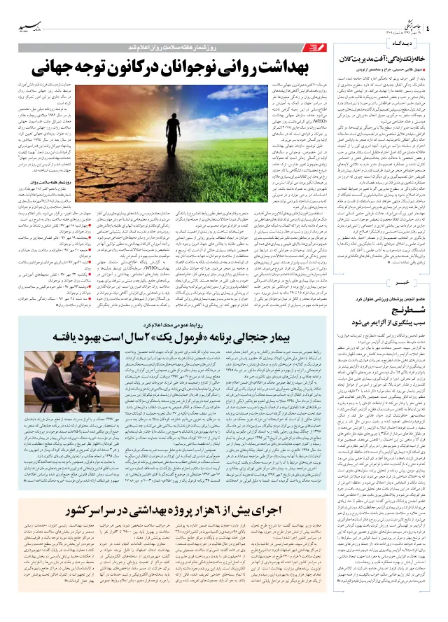
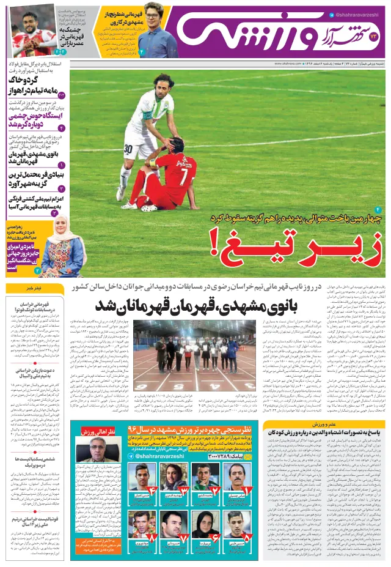
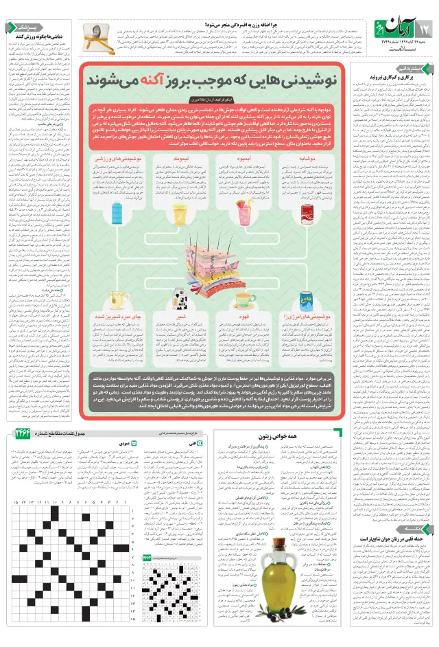
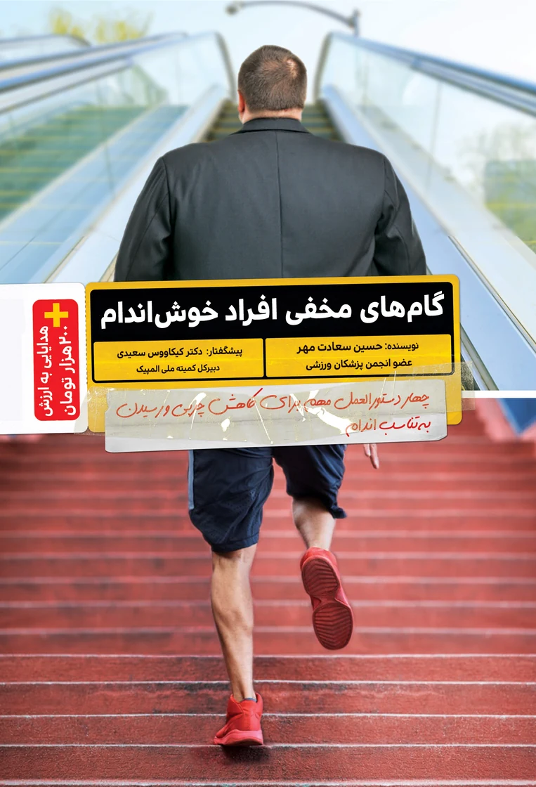

پروتکل ۱۰۰ روزه SMP
بدن شما سختافزار اصلی کسبوکارتان است
صد روز پایش آزمایشگاهی و بازطراحی متابولیسم، طراحیشده برای تقویمی که جای خالی ندارد.
پشتوانه علمی کتاب معماری متابولیک
- پروفسور یواخیم فرانکنوبل شیمی ۲۰۱۷، دانشگاه کلمبیا
- دکتر رودیگر کرچمدیر ارشد سابق ارتقای سلامت، WHO
- پروفسور جوآن منسوندانشکده پزشکی هاروارد
بیشترِ رژیمها شکست نمیخورند. بدن آنها را تهدید حساب میکند.
وقتی کالری ناگهان کم میشود، بدن این را قحطی میخواند و واکنشی میدهد که برای بقا ساخته شده: کورتیزول بالا، متابولیسم پایین، ذخیرهسازی بیشتر. هرچه فشار بیشتر، مقاومت بیشتر. پروتکل SMP از جای دیگری شروع میکند؛ اول امنیت زیستی، بعد تغییر.
معماری مسیر
صد روز، سه فاز، سه گیت ارزیابی
هر فاز با یک بررسی آزمایشگاهی بسته میشود. بدون آن عدد، فاز بعدی شروع نمیشود.
-
روز ۱ تا ۳۰
بازنشانی بیوشیمیایی
مهار مقاومت به انسولین، تنظیم ریتم شبانهروزی و کاهش بار کورتیزول.
گیت روز ۳۰: حساسیت انسولینی، کیفیت خواب عمیق، ثبات انرژی.
-
روز ۳۱ تا ۶۵
فعالسازی موتور هیبریدی
آموزش بدن برای سوزاندن چربی به عنوان سوخت اول و بازبرنامهریزی تمرین.
گیت روز ۶۵: ترکیب بدنی، نرخ اکسیداسیون چربی، توان عملکردی.
-
روز ۶۶ تا ۱۰۰
تثبیت بدون بازگشت
پروتکل خروج ایمن و نهادینهسازی الگوی زیستی شخصیشده.
گیت روز ۱۰۰: شناسنامه متابولیک اختصاصی و استقلال کامل.

یک پرونده، شصت روز، سه عدد
سامان، ۳۸ ساله، تریدر بازارهای مالی. بیش از ده ساعت نشستن روزانه و استرس مزمن بازار.
این گزارش تجربه یک فرد مشخص است، نه وعده نتیجه. پاسخ هر بدن متفاوت است و این مسیر جایگزین تشخیص یا درمان پزشکی نیست.
آنچه رسانهها نوشتهاند
نوشتهها و گفتوگوهای منتشرشده درباره مدیریت متابولیک و پیشگیری از بیماریهای غیرواگیر.




۱۸ بریده مطبوعات چاپی، ۱۴ خبرگزاری و ۱۱ گفتوگو با مفدا.
همه رسانهها
معماری متابولیک
پیشگفتار رسمی کتاب را دکتر رودیگر کرچ، مدیر ارشد سابق بخش ارتقای سلامت سازمان جهانی بهداشت، نوشته است. بدنه علمی اثر بر پژوهشهای منتشرشده متخصصانی از هاروارد، کلمبیا، نیوکاسل و امپریال کالج تکیه دارد.
ببینیم پروتکل با شرایط شما میخواند یا نه
ارزیابی اولیه رایگان است و نتیجهاش ممکن است «نه» باشد. ظرفیت هر دوره محدود است.